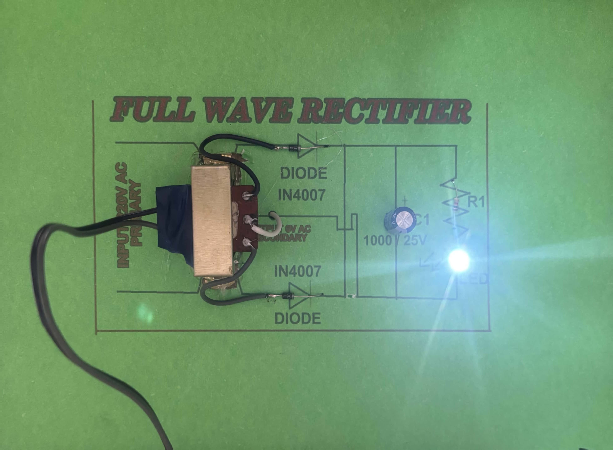

Power supplies
Used in adapters and power units to convert AC mains electricity into DC for devices.
ELECTRONICS • CIRCUITS • PRACTICAL THINKING
One of my early electronics builds, created to understand how alternating current can be converted into usable direct current through a simple but powerful circuit.

Why I built it
Growing up in the mountains made practical systems feel important to me very early. Electricity, devices, and the way power is actually made usable were never just textbook ideas. They felt connected to real life.
This project was one of my early attempts to understand that world through building. I wanted to learn how AC power could be converted into DC power, because that basic idea sits behind so many real electronic systems.
I was not trying to claim a massive innovation here. What mattered to me was understanding the concept properly, assembling it physically, and seeing the circuit work in front of me.
Build Breakdown
| Part | Role in the circuit |
|---|---|
| Transformer | Steps down the AC voltage and provides the center-tapped secondary input. |
| 2 × IN4007 Diodes | Allow current to flow in one direction so both halves of the AC signal can be rectified. |
| Capacitor | Smooths the pulsating DC output by reducing ripple. |
| Resistor / Load | Represents the component or circuit that uses the rectified output. |
| Connecting wires | Complete the electrical path between the components. |
How it works
A full-wave rectifier converts alternating current into direct current by using both halves of the AC waveform. In this circuit, the center-tapped transformer works with two diodes so that one diode conducts during one half-cycle and the other conducts during the opposite half-cycle.
Because of this, current through the load flows in the same direction during both halves of the input cycle. The output is therefore pulsating DC rather than alternating current.
The capacitor then helps smooth that output by storing and releasing charge, making the final voltage more stable.
Applications
Used in adapters and power units to convert AC mains electricity into DC for devices.
Helps convert incoming AC supply into the DC form needed for charging batteries.
Phones, radios, televisions, and many other electronic devices depend on rectified power internally.
Often used in education and prototyping as one of the first practical power-conversion circuits.
Reflection
This project was important to me because it turned a concept from circuit theory into something physical and understandable. It helped me see how electronic systems are built from simple principles that become useful in real life.
More than anything, it reflects an early version of how I like to learn: by building, observing, and understanding how things actually work.